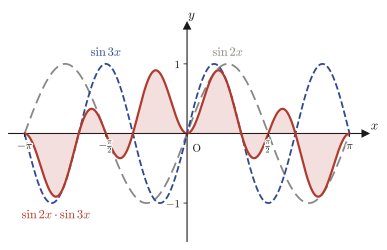
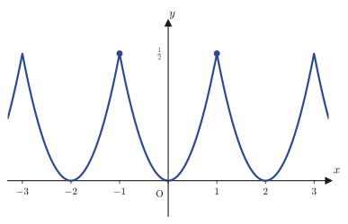
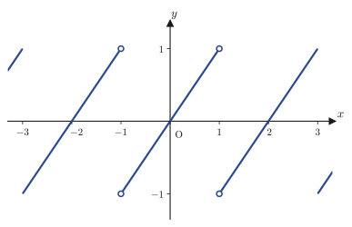
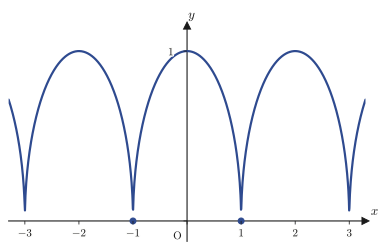

Chapter 27Orthogonality of Trigonometric Functions and Inner Products of Functions
Starting with the next chapter, we will study the astonishing fact that any periodic function (provided it is sufficiently well behaved) can be expressed as an infinite series of $\sin,\cos$—the Fourier series. Before that, however, there is one foundation that we absolutely must establish. Suppose that by gathering together infinitely many $\sin kx,\cos kx$ we can reproduce the original function $f(x)$; how, then, can we extract the “weight” of each term (the Fourier coefficients)? To give away the secret: the collection of trigonometric functions $\sin x,\cos x,\sin2x,\cos2x,\dots$ has a property that is strikingly similar to the one you learned about vectors in high school: “two vectors whose inner product (also called the dot product) is $0$ are perpendicular (orthogonal) to each other.” We can define an “inner product” between functions as well, and the inner product of any two trigonometric functions of different frequencies is $0$ without exception; that is, they are mutually orthogonal. This orthogonality is the only tool we will use to extract the Fourier coefficients in the next chapter.
In this chapter we (1) prove, without skipping a single step, the five basic formulas for the definite integrals of $\sin mx,\cos mx$ ($m$ an integer); (2) building on them, define the “inner product of functions” and the “norm (magnitude) of a function” and confirm the analogy with vectors; and (3) define “piecewise continuous functions” and “piecewise smooth functions” as the classes of functions to which we will apply Fourier series in the next chapter. All of these are the common language of Fourier analysis, and we will use them repeatedly in the chapters that follow.
- The five integral formulas expressing the orthogonality of trigonometric functions: $\int_{-\pi}^{\pi}\sin mx\,dx=0$, $\int_{-\pi}^{\pi}\cos mx\,dx=0$ ($m\neq0$), $\int_{-\pi}^{\pi}\sin mx\cos nx\,dx=0$, $\int_{-\pi}^{\pi}\cos mx\cos nx\,dx=\pi\delta_{mn}$, $\int_{-\pi}^{\pi}\sin mx\sin nx\,dx=\pi\delta_{mn}$ ($m,n$ are positive integers, and $\delta_{mn}$ is the Kronecker delta)
- The definitions of the inner product of functions $\langle f,g\rangle=\displaystyle\int_a^b f(x)g(x)\,dx$ and the norm of a function $\|f\|=\sqrt{\langle f,f\rangle}$, and a rereading of Schwarz's inequality (the Cauchy–Schwarz inequality), which we have already learned, in the language of inner products
- The fact that the collection of trigonometric functions $\sin x,\sin3x,\sin5x,\dots$ has exactly the same structure as mutually orthogonal geometric vectors (an orthogonal basis)
- The definitions of piecewise continuous and piecewise smooth functions: the meaning and use of the one-sided limit notation $\displaystyle\lim_{x\to x_0-0}f(x)$, $\displaystyle\lim_{x\to x_0+0}f(x)$
- Concrete examples of functions that are “continuous but not piecewise smooth” (functions with a sharp point, and functions whose derivative diverges)
- Practice in getting a head start, in the language of orthogonality and norms, on periodic functions such as the square wave that we will use in the next chapter
Source notes: Yasuhide Mochizuki, Mathematics Notes: Fourier Series and Transforms, pp. 1–5.
Throughout this chapter, all the functions we treat are periodic functions. A function $f(x)$ is said to have period $T\gt0$ if $f(x+T)=f(x)$ holds for all $x$ in its domain. For example, $\sin x,\cos x$ both have period $2\pi$ (for instance, $\sin(x+2\pi)=\sin x$). Below, unless otherwise stated, the interval of integration is taken to be one period, $[-\pi,\pi]$. Also, unless otherwise stated, $m,n$ are used as letters denoting integers (zero, the positive integers, and the negative integers are collectively called integers; the notation is $\Z=\{\dots,-2,-1,0,1,2,\dots\}$).
27.1 Orthogonality of Trigonometric Functions — Basic Formulas
What happens when we take the definite integral of $\sin mx,\cos mx$ ($m$ an integer) from $-\pi$ to $\pi$? To state the conclusion first: when we multiply together trigonometric functions of different frequencies (or of different kinds) and integrate, the result is invariably $0$, as reliably as a rubber stamp leaves the same mark every time. Why should such a convenient thing happen? Before going into the proofs, let us first get an intuitive feel for it from a graph.
Intuition: Peaks and valleys balance exactly
The figure below overlays, over the range $-\pi\le x\le\pi$, the graphs of $\sin2x$ (gray dashed line), $\sin3x$ (blue dashed line), and their product $\sin2x\sin3x$ (red solid line; the region filled in red is its area). The graph of the product oscillates violently between positive and negative, but on close inspection the total area of the peaks (positive parts) and the total area of the valleys (negative parts) appear to be exactly equal. The definite integral $\int_{-\pi}^{\pi}\sin2x\sin3x\,dx$ is a “signed area” (area counted as positive above the $x$-axis and negative below it), so if the positive and negative parts cancel exactly, the integral is $0$. This “exact cancellation” between trigonometric functions of different frequencies is precisely the essence of the orthogonality that we are about to prove.

Now let us prove the five basic formulas in turn. The first two integrate $\sin mx$ or $\cos mx$ on its own.
Formula 27.1: Definite integral of $\sin mx$
\begin{align} \int_{-\pi}^{\pi}\sin mx\,dx=0\qquad(m\text{ is an integer)} \label{eq:27-sin-int} \end{align}Proof
When $m=0$, $\sin(0\cdot x)=\sin0=0$ (the constant function $0$), so $\displaystyle\int_{-\pi}^{\pi}0\,dx=0$ and the claim holds. In what follows we prove the claim for the case $m\neq0$. By Formula 3.9 of Chapter 3 ($\frac{d}{dx}\sin x=\cos x$) and the chain rule (covered in high school mathematics), $\dfrac{d}{dx}\cos(mx)=-m\sin(mx)$. Dividing both sides by $-m$ (we may divide because $m\neq0$) gives
$$ \frac{d}{dx}\left(-\frac{1}{m}\cos(mx)\right)=\sin(mx) $$That is, an antiderivative of $\sin(mx)$ is $-\dfrac1m\cos(mx)$ (this can also be viewed as an extension to $\sin(mx)$ of Formulas 5.2 and 5.3 of Chapter 5, $\int\sin x\,dx=-\cos x+C$, by the substitution $u=mx$ ($du=m\,dx$)). Therefore,
$$ \int_{-\pi}^{\pi}\sin mx\,dx=\left[-\frac{1}{m}\cos mx\right]_{-\pi}^{\pi}=-\frac{1}{m}\cos m\pi-\left(-\frac{1}{m}\cos(-m\pi)\right)=-\frac{1}{m}\cos m\pi+\frac{1}{m}\cos(-m\pi) $$Now, cosine is an even function (a function for which $\cos(-\theta)=\cos\theta$ holds for all $\theta$; this corresponds to the fact that reversing the sign of the angle on the unit circle does not change the $x$-coordinate), so $\cos(-m\pi)=\cos m\pi$. Hence the expression above becomes
$$ -\frac{1}{m}\cos m\pi+\frac{1}{m}\cos m\pi=0 $$Thus we have shown that $\displaystyle\int_{-\pi}^{\pi}\sin mx\,dx=0$.
∎
Formula 27.2: Definite integral of $\cos mx$
\begin{align} \int_{-\pi}^{\pi}\cos mx\,dx=0\qquad(m\text{ is an integer other than }0\text{)} \label{eq:27-cos-int} \end{align}Proof
As with Eq. \eqref{eq:27-sin-int} (Formula 27.1), by Formula 3.10 ($\frac{d}{dx}\cos x=-\sin x$) and the chain rule we have $\dfrac{d}{dx}\sin(mx)=m\cos(mx)$, so dividing both sides by $m$ ($\neq0$) shows that an antiderivative of $\cos(mx)$ is $\dfrac1m\sin(mx)$. Therefore,
$$ \int_{-\pi}^{\pi}\cos mx\,dx=\left[\frac{1}{m}\sin mx\right]_{-\pi}^{\pi}=\frac{1}{m}\sin m\pi-\frac{1}{m}\sin(-m\pi) $$Sine is an odd function (a function for which $\sin(-\theta)=-\sin\theta$ holds for all $\theta$), so $\sin(-m\pi)=-\sin m\pi$. Moreover, since $m$ is an integer, $m\pi$ is an integer multiple of $\pi$, and $\sin(m\pi)=0$ ($\sin$ is always $0$ at integer multiples of $\pi$). Hence
$$ \frac{1}{m}\sin m\pi-\frac{1}{m}(-\sin m\pi)=\frac{1}{m}\cdot0+\frac{1}{m}\cdot0=0 $$Thus we have shown that $\displaystyle\int_{-\pi}^{\pi}\cos mx\,dx=0$.
∎
Caution: $m=0$ is excluded
Formula 27.1 holds as it stands even for $m=0$ (since both sides are $0$), but Formula 27.2 does not hold for $m=0$. Indeed, since $\cos(0\cdot x)=\cos0=1$, we have $\displaystyle\int_{-\pi}^{\pi}\cos(0\cdot x)\,dx=\int_{-\pi}^{\pi}1\,dx=2\pi\neq0$. When we define the coefficients of the Fourier series in the next chapter, the reason that only the constant term (the part corresponding to $a_0$) is treated specially is precisely this exception at $m=0$.
Next we move on to three formulas in which we multiply $\sin$ and $\cos$ (or functions of the same kind) and integrate. Here the product-to-sum formulas learned in high school mathematics (High School Mathematics, Section 5.5, Formulas 5.15 through 5.18) play the leading role. In product form the antiderivative is hard to see, but once the product is rewritten as a sum, Formulas 27.1 and 27.2 can be used as they are.
Formula 27.3: Orthogonality of $\sin mx\cos nx$
\begin{align} \int_{-\pi}^{\pi}\sin mx\cos nx\,dx=0\qquad(m,n\text{ are integers)} \label{eq:27-sincos-orth} \end{align}Proof
Substituting $\alpha=mx,\ \beta=nx$ into the product-to-sum Formula 5.15 of high school mathematics (High School Mathematics, Section 5.5, $\sin\alpha\cos\beta=\frac12\{\sin(\alpha+\beta)+\sin(\alpha-\beta)\}$) gives
$$ \sin mx\cos nx=\frac12\{\sin(m+n)x+\sin(m-n)x\} $$Integrating both sides from $-\pi$ to $\pi$ gives
$$ \int_{-\pi}^{\pi}\sin mx\cos nx\,dx=\frac12\int_{-\pi}^{\pi}\sin(m+n)x\,dx+\frac12\int_{-\pi}^{\pi}\sin(m-n)x\,dx $$If $m,n$ are integers, then $m+n,\ m-n$ are also integers. We therefore divide the argument into three cases according to how $m,n$ compare in size.
[1] When $m\neq\pm n$. In this case $m+n\neq0$ and $m-n\neq0$, so by Eq. \eqref{eq:27-sin-int} (Formula 27.1; since $m+n,\ m-n$ are “integers other than $0$,” it applies with each of them regarded as the new $m$), the two integrals on the right-hand side are both $0$.
$$ \frac12\int_{-\pi}^{\pi}\sin(m+n)x\,dx+\frac12\int_{-\pi}^{\pi}\sin(m-n)x\,dx=\frac12\cdot0+\frac12\cdot0=0 $$[2] When $m=n$ (including the case $\neq0$). Since $m-n=0$, we have $\sin(m-n)x=\sin0=0$, so the second integral is $0$ from the outset (it vanishes not “because we use Formula 27.1” but because the integrand itself is identically $0$). For the remaining first term, since $m+n=2m$ is an integer other than $0$ (if $m\neq0$), Formula 27.1 gives
$$ \frac12\int_{-\pi}^{\pi}\sin(m+n)x\,dx+\frac12\int_{-\pi}^{\pi}\underbrace{\sin(m-n)x}_{=0}\,dx=\frac12\int_{-\pi}^{\pi}\sin\bigl(2mx\bigr)\,dx+0=\frac12\cdot0=0 $$(When $m=0$, both integrands are identically $0$, so the integral is obviously $0$ as well.)
[3] When $m=-n$. By symmetry with [2], this time $m+n=0$, so $\sin(m+n)x=0$ and the first term is identically $0$; for the remaining second term, $m-n=2m$ falls under Formula 27.1, so it is $0$.
$$ \frac12\int_{-\pi}^{\pi}\underbrace{\sin(m+n)x}_{=0}\,dx+\frac12\int_{-\pi}^{\pi}\sin(m-n)x\,dx=0+\frac12\cdot0=0 $$Since the integral is $0$ in each of the cases [1], [2], and [3], we have shown that $\displaystyle\int_{-\pi}^{\pi}\sin mx\cos nx\,dx=0$.
∎
Alternative solution: A shortcut via odd × even = odd
This can be proved faster from symmetry alone, without splitting into cases. The function $\sin mx$ is odd (just apply $\sin(-\theta)=-\sin\theta$, confirmed in the proof of Formula 27.2, with $\theta=mx$: $\sin(-mx)=\sin(-1\cdot mx)=-\sin(mx)$), and $\cos nx$ is even (similarly, $\cos(-nx)=\cos(nx)$). In general, “(odd function) × (even function)” is an odd function—indeed, if we put $h(x)=f(x)g(x)$ ($f$ odd, $g$ even), then $h(-x)=f(-x)g(-x)=\{-f(x)\}\{g(x)\}=-f(x)g(x)=-h(x)$, so $h$ also satisfies the definition of an odd function. Therefore $\sin mx\cos nx$ is an odd function of $x$. Furthermore, in general, when an odd function $h(x)$ is integrated over the symmetric interval $[-\pi,\pi]$, the area of the part with $x\gt0$ and the area of the part with $x\lt0$ have opposite signs and cancel exactly, so the integral is always $0$ (a direct consequence of the graph's being symmetric about the origin). Hence
$$ \int_{-\pi}^{\pi}\sin mx\cos nx\,dx=0 $$is obtained in one stroke, with no case analysis.
Caution: From now on, $m,n$ are positive integers
In the next two formulas, Formulas 27.4 and 27.5, the answer differs between the case $m=n$ and the case $m\neq n$. If we allowed $m,n$ to be negative integers as well, a confusing situation would arise in which “although $m\neq n$ as indices, because of the signs, $\cos mx\cos nx$ takes the same form $\cos^2(\pm mx)$ as in the case $m=n$” (for example, when $n=-m$). Indeed, $\cos mx\cos(-mx)=\cos^2mx$, and its integral comes out to $\pi$, the same as for $m=n$. Similarly, for $\sin mx\sin nx$ with $n=-m$ we get $\sin mx\sin(-mx)=-\sin^2mx$. Its integral is $-\pi$, a value that differs from both the value $\pi$ at $m=n$ and the value $0$ at $m\neq n$—so the form of the formula breaks down even more clearly than in the $\cos$ case. What we actually use in the Fourier series from the next chapter onward is only the case where $m,n$ in $\cos mx,\sin nx$ are always positive integers $1,2,3,\dots$. We therefore restrict $m,n$ in Formulas 27.4 and 27.5 from now on to positive integers (integers $1$ or greater). With this restriction, when $m\neq n$, $m+n$ and $m-n$ never become $0$ at the same time, and the case analysis in the proof becomes clean. Note also that Formulas 27.1 through 27.3 (the orthogonality of $\sin,\cos$ taken singly, and of $\sin\times\cos$) are broader statements that hold for all integers $m,n$, positive or negative.
Formula 27.4: Orthogonality of $\cos mx\cos nx$
\begin{align} \int_{-\pi}^{\pi}\cos mx\cos nx\,dx=\begin{cases}\pi & (m=n)\\ 0 & (m\neq n)\end{cases}\qquad(m,n\text{ are positive integers)} \label{eq:27-coscos-orth} \end{align}Proof
[1] When $m=n$. We have $\cos mx\cos nx=\cos^2mx$. Solving the double-angle Formula 5.8 of high school mathematics ($\cos2\theta=2\cos^2\theta-1$) for $\cos^2\theta$ gives $\cos^2\theta=\dfrac{1+\cos2\theta}{2}$ (this is also the half-angle Formula 5.11 reread with $\alpha=2\theta$). Substituting $\theta=mx$, we obtain
$$ \cos^2mx=\frac{1+\cos2mx}{2} $$Therefore,
$$ \int_{-\pi}^{\pi}\cos mx\cos nx\,dx=\int_{-\pi}^{\pi}\cos^2mx\,dx=\frac12\int_{-\pi}^{\pi}1\,dx+\frac12\int_{-\pi}^{\pi}\cos2mx\,dx $$The second term on the right-hand side is $0$ by Eq. \eqref{eq:27-cos-int} (Formula 27.2), because $2m$ is an integer other than $0$ ($2m\ge2$ since $m$ is a positive integer). The first term is
$$ \frac12\int_{-\pi}^{\pi}1\,dx=\frac12\bigl[x\bigr]_{-\pi}^{\pi}=\frac12\{\pi-(-\pi)\}=\frac12\cdot2\pi=\pi $$so, adding the two, $\displaystyle\int_{-\pi}^{\pi}\cos mx\cos nx\,dx=\pi+0=\pi$.
[2] When $m\neq n$ (both positive integers). By the product-to-sum Formula 5.17 of high school mathematics ($\cos\alpha\cos\beta=\frac12\{\cos(\alpha+\beta)+\cos(\alpha-\beta)\}$),
$$ \cos mx\cos nx=\frac12\{\cos(m+n)x+\cos(m-n)x\} $$Integrating both sides gives
$$ \int_{-\pi}^{\pi}\cos mx\cos nx\,dx=\frac12\int_{-\pi}^{\pi}\cos(m+n)x\,dx+\frac12\int_{-\pi}^{\pi}\cos(m-n)x\,dx $$Since $m,n$ are both positive integers, $m+n\ge2$, that is, $m+n\neq0$. Also, by the assumption $m\neq n$, we have $m-n\neq0$. Hence Formula 27.2 (the formula for integers other than $0$) can be applied as it stands to both terms, and
$$ \int_{-\pi}^{\pi}\cos mx\cos nx\,dx=\frac12\cdot0+\frac12\cdot0=0 $$is obtained.
∎
Formula 27.5: Orthogonality of $\sin mx\sin nx$
\begin{align} \int_{-\pi}^{\pi}\sin mx\sin nx\,dx=\begin{cases}\pi & (m=n)\\ 0 & (m\neq n)\end{cases}\qquad(m,n\text{ are positive integers)} \label{eq:27-sinsin-orth} \end{align}Proof
[1] When $m=n$. We have $\sin mx\sin nx=\sin^2mx$. Substituting $\theta=mx$ into the relation obtained by rereading the half-angle Formula 5.10 of high school mathematics with $\alpha=2\theta$ (or by solving $\cos2\theta=1-2\sin^2\theta$ in the double-angle Formula 5.8 for $\sin^2\theta$), namely $\sin^2\theta=\dfrac{1-\cos2\theta}{2}$, we get
$$ \sin^2mx=\frac{1-\cos2mx}{2} $$Hence
$$ \int_{-\pi}^{\pi}\sin mx\sin nx\,dx=\int_{-\pi}^{\pi}\sin^2mx\,dx=\frac12\int_{-\pi}^{\pi}1\,dx-\frac12\int_{-\pi}^{\pi}\cos2mx\,dx $$Since $m$ is a positive integer, $2m\neq0$, so by Eq. \eqref{eq:27-cos-int} (Formula 27.2) the second term is $0$. The first term equals $\pi$ by the same computation as in Eq. \eqref{eq:27-coscos-orth} (Formula 27.4 [1]). Therefore
$$ \int_{-\pi}^{\pi}\sin mx\sin nx\,dx=\pi-0=\pi . $$[2] When $m\neq n$ (both positive integers). By the product-to-sum Formula 5.18 of high school mathematics ($\sin\alpha\sin\beta=-\frac12\{\cos(\alpha+\beta)-\cos(\alpha-\beta)\}$),
$$ \sin mx\sin nx=-\frac12\cos(m+n)x+\frac12\cos(m-n)x $$Integrating both sides gives
$$ \int_{-\pi}^{\pi}\sin mx\sin nx\,dx=-\frac12\int_{-\pi}^{\pi}\cos(m+n)x\,dx+\frac12\int_{-\pi}^{\pi}\cos(m-n)x\,dx $$Since $m,n$ are both positive integers, $m+n\ge2\gt0$, that is, $m+n\neq0$. Also, since $m\neq n$, we have $m-n\neq0$. Hence by Formula 27.2 both integrals are $0$, and
$$ \int_{-\pi}^{\pi}\sin mx\sin nx\,dx=-\frac12\cdot0+\frac12\cdot0=0 $$is obtained.
∎
Math Note: Combining the cases with the Kronecker delta
Formulas 27.4 and 27.5 have the form of a “case split”: the answer differs between the case $m=n$ and the case $m\neq n$. In mathematics, a case split of this kind can be combined into a single expression by using a symbol called the Kronecker delta:
$$ \delta_{mn}=\begin{cases}1 & (m=n)\\ 0 & (m\neq n)\end{cases} $$You can think of $\delta_{mn}$ as “a switch that tests whether $m$ and $n$ are equal.” With it, for positive integers $m,n$, Formulas 27.3 through 27.5 can be written together as
$$ \int_{-\pi}^{\pi}\cos mx\cos nx\,dx=\pi\,\delta_{mn},\qquad \int_{-\pi}^{\pi}\sin mx\sin nx\,dx=\pi\,\delta_{mn},\qquad \int_{-\pi}^{\pi}\sin mx\cos nx\,dx=0 $$This notation appears repeatedly in linear algebra as well (for example, when writing a set of basis vectors whose inner products are $0$).
Example 27.1: Computing an integral by combining the orthogonality formulas
Compute the following definite integral.
$$ \int_{-\pi}^{\pi}\left(3\cos2x-4\sin5x+7\right)\cos2x\,dx $$Solution. Expanding the integrand, we can split the integral into a sum of three terms (linearity of the integral: the integral of a sum is the sum of the integrals).
$$ \int_{-\pi}^{\pi}\left(3\cos2x-4\sin5x+7\right)\cos2x\,dx=3\int_{-\pi}^{\pi}\cos2x\cos2x\,dx-4\int_{-\pi}^{\pi}\sin5x\cos2x\,dx+7\int_{-\pi}^{\pi}\cos2x\,dx $$For the first term, Eq. \eqref{eq:27-coscos-orth} (Formula 27.4) with $m=n=2$ (the case $m=n\neq0$) gives $\displaystyle\int_{-\pi}^{\pi}\cos2x\cos2x\,dx=\pi$. For the second term, Eq. \eqref{eq:27-sincos-orth} (Formula 27.3, with $m=5,n=2$, of the form $\sin mx\cos nx$) gives $\displaystyle\int_{-\pi}^{\pi}\sin5x\cos2x\,dx=0$. For the third term, Eq. \eqref{eq:27-cos-int} (Formula 27.2) with $m=2\,(\neq0)$ gives $\displaystyle\int_{-\pi}^{\pi}\cos2x\,dx=0$. Therefore,
$$ 3\cdot\pi-4\cdot0+7\cdot0=3\pi $$This is the answer (verified with SymPy: direct integration agrees with $3\pi$).
27.2 Inner Products and Norms of Functions
In Formulas 27.1 through 27.5 we saw that the integral of a product of two trigonometric functions is, in many cases, $0$. Recall the inner product of vectors from high school mathematics (High School Mathematics, Section 7.4). There, the inner product $\vec a\cdot\vec b$ of two vectors $\vec a,\vec b$ being $0$ was equivalent to $\vec a,\vec b$ being perpendicular (orthogonal) to each other. The relation “the integral is $0$” can in fact be reinterpreted as saying that the “inner product” of the two functions is $0$. Then Formulas 27.3 through 27.5 become a single geometric statement that fits in one phrase: “distinct trigonometric functions are orthogonal to one another.” To prepare for this, let us define the inner product and the norm (magnitude) of functions.
Definition 27.1: Inner product of functions
For two piecewise continuous functions $f(x),g(x)$ defined on an interval $[a,b]$, we define the inner product $\langle f,g\rangle$ of $f(x)$ and $g(x)$ by
$$ \langle f,g\rangle=\int_a^b f(x)g(x)\,dx $$(Note that the operation of “multiplying $f(x)$ and $g(x)$ and integrating over the whole interval” is the “continuous version” of the operation of multiplying the corresponding components of vectors and adding them up, $\vec a\cdot\vec b=a_1b_1+a_2b_2+\cdots$. You can think of it as the sum $\sum$ having been replaced by the integral $\int$, and the discrete index $1,2,\dots,n$ by the continuous variable $x$.)
For this definition to be meaningful (that is, for the integral to actually exist), $f(x),g(x)$ must be reasonably well-behaved functions, and that is why the definition above imposes in advance the condition “piecewise continuous.” The precise meaning of this condition will be defined in Section 27.4. For now, you may assume that all the functions appearing in this chapter (trigonometric functions and their sums) satisfy this condition.
Let us try out the definition of the inner product right away. Eq. \eqref{eq:27-sincos-orth} (Formula 27.3, in the case $m=n=1$) can be restated in the language of inner products as follows.
$$ \langle \sin x,\cos x\rangle=\int_{-\pi}^{\pi}\sin x\cos x\,dx=0 $$In other words, “the inner product of $\sin x$ and $\cos x$ is $0$”—in the language of vectors, “$\sin x$ and $\cos x$ are orthogonal.” Similarly, Formulas 27.3 through 27.5 can be restated together as follows: for positive integers $m\neq n$, $\langle \cos mx,\cos nx\rangle=0$ and $\langle \sin mx,\sin nx\rangle=0$, and for all integers $m,n$, $\langle \sin mx,\cos nx\rangle=0$.
Definition 27.2: Norm of a function
For a piecewise continuous function $f(x)$ on an interval $[a,b]$, we define the norm (magnitude) $\|f(x)\|$ of $f(x)$ by
$$ \|f(x)\|=\sqrt{\langle f,f\rangle}=\sqrt{\int_a^b f(x)^2\,dx} $$(Note that this has exactly the same form as the definition of the magnitude of a vector, $|\vec a|=\sqrt{\vec a\cdot\vec a}$. Since $f(x)^2\ge0$ under the square root, the integrand is never negative, so $\|f(x)\|$ is always defined as a real number that is at least $0$.)
Theorem 27.1: Schwarz's inequality (in the form for inner products of functions)
For piecewise continuous functions $f(x),g(x)$ on an interval $[a,b]$, the inequality
\begin{align} \langle f,g\rangle^2\le\langle f,f\rangle\cdot\langle g,g\rangle,\qquad\text{that is}\qquad |\langle f,g\rangle|\le\|f\|\,\|g\| \label{eq:27-schwarz} \end{align}holds.
This inequality has already been proved
In fact, this theorem is not a new theorem. It is precisely Theorem 5.3 (Schwarz's inequality) of Chapter 5, where it was rigorously proved using the discriminant, in the form $\left(\displaystyle\int_a^b fg\,dx\right)^2\le\displaystyle\int_a^b f^2\,dx\cdot\int_a^b g^2\,dx$ (a footnote in Chapter 5 had already announced that “this can be written, using the inner product of functions $\langle f,g\rangle$, as $\langle f,g\rangle^2\le\langle f,f\rangle\langle g,g\rangle$”). Now that we have formally defined, in this chapter, the notation of the inner product $\langle f,g\rangle=\int_a^b fg\,dx$ and the norm $\|f\|=\sqrt{\langle f,f\rangle}$, the same theorem can be rewritten in exactly the same form as Schwarz's inequality for vectors in high school mathematics, $(\vec a\cdot\vec b)^2\le|\vec a|^2|\vec b|^2$; that is what Theorem 27.1 means (Eq. \eqref{eq:27-schwarz}). If you want to reread the proof, refer to Section 5.2.
Now that we have defined the inner product and the norm, let us confirm that another inequality familiar from vectors—the triangle inequality—also holds in exactly the same form (this is not in the source notes, but since it is a basic property that we will use many times from now on, alongside Schwarz's inequality, we supply it here).
Theorem 27.2: Triangle inequality (in the form for norms of functions)
For piecewise continuous functions $f(x),g(x)$ on an interval $[a,b]$, the inequality
\begin{align} \|f+g\|\le\|f\|+\|g\| \label{eq:27-triangle-ineq} \end{align}holds.
Proof
By the linearity of the integral (already learned in Chapter 5: the integral of a sum is the sum of the integrals, and constant multiples can be taken outside), the inner product satisfies $\langle f+g,h\rangle=\langle f,h\rangle+\langle g,h\rangle$ (indeed, $\int_a^b\{f(x)+g(x)\}h(x)\,dx=\int_a^b f(x)h(x)\,dx+\int_a^b g(x)h(x)\,dx$, and the right-hand side is precisely $\langle f,h\rangle+\langle g,h\rangle$). Using this, the square of the norm, $\|f+g\|^2$, can be expanded in exactly the same way as the expansion $(\vec a+\vec b)\cdot(\vec a+\vec b)=|\vec a|^2+2\vec a\cdot\vec b+|\vec b|^2$ in high school mathematics, as follows.
$$ \|f+g\|^2=\langle f+g,f+g\rangle=\langle f,f\rangle+\langle f,g\rangle+\langle g,f\rangle+\langle g,g\rangle=\|f\|^2+2\langle f,g\rangle+\|g\|^2 $$(That $\langle f,g\rangle=\langle g,f\rangle$ is clear from the fact that, in the definition $\int_a^b f(x)g(x)\,dx$ of the inner product, the order of the factors in the integrand can be swapped: $f(x)g(x)=g(x)f(x)$.) Now, by Eq. \eqref{eq:27-schwarz} (Theorem 27.1, Schwarz's inequality), $\langle f,g\rangle\le|\langle f,g\rangle|\le\|f\|\,\|g\|$ holds, so substituting this gives
$$ \|f+g\|^2\le\|f\|^2+2\|f\|\,\|g\|+\|g\|^2=(\|f\|+\|g\|)^2 $$Finally, $\|f+g\|$ and $\|f\|+\|g\|$ are both real numbers that are at least $0$ (by the definition of the norm), and for numbers that are at least $0$, the order of their squares agrees with the order of the original numbers (if $0\le X\le Y$, then $0\le\sqrt X\le\sqrt Y$). Therefore, taking square roots of both sides, we obtain
$$ \|f+g\|\le\|f\|+\|g\| $$which is what was to be shown.
∎
Correspondence with the triangle inequality for vectors
The triangle inequality for vectors that you learned in high school mathematics, $|\vec a+\vec b|\le|\vec a|+|\vec b|$ (the sum of the lengths of two sides is at least the length of the remaining side—the very condition for a triangle to exist), has exactly the same form as Theorem 27.2. It asserts that if we measure the “magnitude” of a function by the norm, then in the world of functions too the same geometric intuition as for vectors—the total length of a roundabout route is at least the length of the direct route—holds.
Application: Orthogonality shows up everywhere
The property that “waves of different frequencies are orthogonal to one another” is not a phenomenon peculiar to Fourier series. From the frequency analysis of sound (decomposing speech and music signals into superpositions of pure tones), through the independence of the vibrational modes of a crystal lattice (phonons, the normal modes of sound waves propagating through the lattice) and the mechanism by which X-ray diffraction detects the periodic structure of a crystal, to the orthogonality of wave functions in quantum mechanics (the inner product of states with different energy levels is $0$), the same tool—the “inner product of functions”—appears again and again in different guises. When you deal with crystal structures and spectra in materials science, please remember that the idea of orthogonality that you learn in this chapter underlies them.
Example 27.2: Inner product and norms of polynomial functions, and checking Schwarz's inequality
On the interval $[-1,1]$, let $f(x)=x,\ g(x)=x^2$. (1) Find $\langle f,g\rangle$, $\|f\|$, and $\|g\|$. (2) Verify that Schwarz's inequality $|\langle f,g\rangle|\le\|f\|\|g\|$ actually holds.
Solution. (1) By the definition of the inner product (Definition 27.1),
$$ \langle f,g\rangle=\int_{-1}^{1}x\cdot x^2\,dx=\int_{-1}^{1}x^3\,dx $$Here, $x^3$ is an odd function ($(-x)^3=-x^3$) and the interval of integration $[-1,1]$ is symmetric about the origin, so, for the same reason as in the alternative solution to Formula 27.3 (the integral of an odd function over an interval symmetric about the origin is $0$), we see that $\langle f,g\rangle=0$ without any computation. To be safe, a direct computation gives $\displaystyle\int_{-1}^1x^3\,dx=\left[\frac{x^4}{4}\right]_{-1}^1=\frac14-\frac14=0$, which indeed agrees.
Next we compute the norms. By Definition 27.2,
$$ \|f\|=\sqrt{\int_{-1}^1x^2\,dx}=\sqrt{\left[\frac{x^3}{3}\right]_{-1}^1}=\sqrt{\frac13-\left(-\frac13\right)}=\sqrt{\frac23}=\frac{\sqrt6}{3} $$ $$ \|g\|=\sqrt{\int_{-1}^1x^4\,dx}=\sqrt{\left[\frac{x^5}{5}\right]_{-1}^1}=\sqrt{\frac15-\left(-\frac15\right)}=\sqrt{\frac25}=\frac{\sqrt{10}}{5} $$(Verified with SymPy: $\|f\|=\sqrt6/3\approx0.8165$, $\|g\|=\sqrt{10}/5\approx0.6325$.)
(2) We have $|\langle f,g\rangle|=0$, while $\|f\|\|g\|=\dfrac{\sqrt6}{3}\times\dfrac{\sqrt{10}}{5}=\dfrac{\sqrt{60}}{15}=\dfrac{2\sqrt{15}}{15}\approx0.516$ is a positive number, so $0\le0.516$, and Schwarz's inequality does indeed hold (although equality does not). In fact, $\langle f,g\rangle=0$ ($f\perp g$, that is, the inner product is $0$) is an example showing that $f(x)=x$ and $g(x)=x^2$, even though they are not trigonometric functions, are orthogonal by the same mechanism: “the product of an odd function and an even function is an odd function, and its integral over a symmetric interval is $0$.” We see that orthogonality is not a privilege of trigonometric functions alone.
27.3 The Analogy Between Trigonometric Functions and Vectors
In Section 27.2 we defined the inner product and norm of functions. Here, through a concrete example, let us confirm that the collection of trigonometric functions $\sin x,\sin3x,\sin5x,\dots$ has exactly the same structure as the “mutually orthogonal basis vectors” that you learned about when studying vectors in high school mathematics (a set of linearly independent vectors pointing in different directions).
Illustration 27.1: The analogy between trigonometric functions and vectors
As an example, consider the following function $y$ and the three-dimensional vector $Y$.
$$ y=\sum_{k=1}^{3}\frac{\sin(2k-1)x}{2k-1}=\sin x+\frac13\sin3x+\frac15\sin5x, \qquad Y=\left[\,1\ \ \frac13\ \ \frac15\,\right] $$The function $y$ is a superposition of the three functions $\sin x,\sin3x,\sin5x$ with coefficients $1,\frac13,\frac15$. The vector $Y$ consists of the same coefficients $1,\frac13,\frac15$ lined up as the components of a three-dimensional vector. Let us check, on both the function side [i] and the vector side [ii], that each of these two has the same structure: “a superposition, with coefficients, of three orthogonal basis elements.”
[i] On $y$ (inner products of functions). We compute the inner products among $\sin x,\sin3x,\sin5x$ according to Definition 27.1. For a combination of two distinct functions, Formula 27.5 ($\sin mx\sin nx$, $m\neq n$) can be used as it stands, and we obtain
$$ \langle\sin x,\sin3x\rangle=\int_{-\pi}^{\pi}\sin x\sin3x\,dx=0,\qquad \langle\sin3x,\sin5x\rangle=\int_{-\pi}^{\pi}\sin3x\sin5x\,dx=0,\qquad \langle\sin5x,\sin x\rangle=\int_{-\pi}^{\pi}\sin5x\sin x\,dx=0 $$In all three pairs the inner product is $0$; that is, the three functions are mutually orthogonal. Moreover, the inner product of each function with itself (the case $m=n$ of Formula 27.5) is
$$ \langle\sin x,\sin x\rangle=\int_{-\pi}^{\pi}\sin x\sin x\,dx=\pi,\qquad \langle\sin3x,\sin3x\rangle=\int_{-\pi}^{\pi}\sin3x\sin3x\,dx=\pi,\qquad \langle\sin5x,\sin5x\rangle=\int_{-\pi}^{\pi}\sin5x\sin5x\,dx=\pi $$so all three are equal to $\pi$ (hence the norms are all the same: $\|\sin x\|=\|\sin3x\|=\|\sin5x\|=\sqrt\pi$).
[ii] On $Y$ (inner products of vectors). Let us name $\vec e_1=\sin x,\ \vec e_2=\sin3x,\ \vec e_3=\sin5x$ (this is notation for regarding the functions as “basis vectors”). Expressing $Y$ as a linear combination of the standard basis of ordinary three-dimensional space, $\vec e_1=[1,0,0],\ \vec e_2=[0,1,0],\ \vec e_3=[0,0,1]$ (vectors of length $1$ pointing along the coordinate axes), we get
$$ Y=\vec e_1+\frac13\vec e_2+\frac15\vec e_3 $$(note that the coefficients correspond exactly to those in the expression for $y$ in [i]). Now, by the definition of the inner product of vectors in high school mathematics ($\vec a\cdot\vec b=|\vec a||\vec b|\cos\theta$; in components, the sum of the products of corresponding components), distinct standard basis vectors are perpendicular ($\theta=90^\circ$), so the inner products of distinct basis vectors are
$$ \vec e_1\cdot\vec e_2=0,\qquad \vec e_2\cdot\vec e_3=0,\qquad \vec e_3\cdot\vec e_1=0 $$and for each basis vector with itself (since it is a unit vector of length $1$) we have
$$ \vec e_1\cdot\vec e_1=1,\qquad \vec e_2\cdot\vec e_2=1,\qquad \vec e_3\cdot\vec e_3=1 $$Figure 27.2 illustrates the relationship between the vector $Y$ and its basis $\vec e_1,\vec e_2,\vec e_3$ (the coordinate axes).
To summarize the above, since
$$ \vec e_1\cdot\vec e_2=\vec e_2\cdot\vec e_3=\vec e_3\cdot\vec e_1=0 $$the inner products are $0$—this is exactly the same structure as $\langle\sin x,\sin3x\rangle=\langle\sin3x,\sin5x\rangle=\langle\sin5x,\sin x\rangle=0$, which we saw in [i]. Thus, since trigonometric functions give $0$ when their inner product is taken with a function of a different period, we can regard them as being orthogonal to one another, at $90^\circ$.
In general, a collection of mutually orthogonal functions that serves as the “material” for building various functions by linear combinations is called an orthogonal basis—a term that brings into the world of functions the same idea by which, in high school mathematics, every vector could be expressed as a linear combination of mutually orthogonal basis vectors (when all the norms are equal to $1$, the basis is in particular called an orthonormal basis, but since $\sin x,\sin3x,\sin5x,\dots$ have norm $\sqrt\pi$ and not $1$, strictly speaking they form an orthogonal basis before the norms are normalized to $1$). As in $\displaystyle y=\sum_{k=1}^{\infty}\frac{\sin(2k-1)x}{2k-1}$, there are infinitely many functions in the “sine orthogonal basis” ($\sin x,\sin3x,\sin5x,\dots$). Whereas a basis of a three-dimensional vector space consists of three arrows, in the “space” of functions, infinitely many functions, such as $\sin x,\sin3x,\sin5x,\dots$, can play the role of an orthogonal basis.
Preview: What this $y$ really is
In fact, $\displaystyle y=\sin x+\frac13\sin3x+\frac15\sin5x$, treated in this section, and its infinite-series version $\displaystyle y=\sum_{k=1}^{\infty}\frac{\sin(2k-1)x}{2k-1}$ are not examples that were thought up on a whim. They are nothing other than the Fourier series of the “square wave” that we will study in the next chapter (a periodic function that switches back and forth between just two values: $-1$ for $-\pi\lt x\le0$ and $+1$ for $0\lt x\le\pi$), truncated partway (to finitely many terms). In other words, the $y$ of this section is “the square wave approximated using only three orthogonal $\sin$ basis functions,” and the more terms we include ($k\to\infty$), the closer it gets to the square wave. We will take up this intuition again in Example 27.5 of Section 27.4.
Example 27.3: Finding the norm from the coefficients of an orthogonal basis
Let $y=\sin x-2\sin2x+4\sin4x$. Find $\|y\|$ (the norm on $[-\pi,\pi]$).
Solution. The functions $\sin x,\sin2x,\sin4x$ are mutually orthogonal (by Formula 27.5, since the indices are all distinct positive integers), and $\|\sin x\|=\|\sin2x\|=\|\sin4x\|=\sqrt\pi$ (the case $m=n$ of Formula 27.5). Writing out the square of the norm from its definition, we obtain
$$ \|y\|^2=\langle y,y\rangle=\int_{-\pi}^{\pi}(\sin x-2\sin2x+4\sin4x)^2\,dx $$Expanding the integrand gives the squared terms $(\sin x)^2,(2\sin2x)^2,(4\sin4x)^2$ and cross terms such as $\sin x\cdot(-2\sin2x)$. Every cross term is a “product of $\sin$ functions with different indices,” so by Formula 27.5 ($m\neq n$) each of them integrates to $0$. Therefore only the squared terms remain, and
$$ \|y\|^2=1^2\int_{-\pi}^{\pi}\sin^2x\,dx+(-2)^2\int_{-\pi}^{\pi}\sin^22x\,dx+4^2\int_{-\pi}^{\pi}\sin^24x\,dx=1^2\cdot\pi+(-2)^2\cdot\pi+4^2\cdot\pi $$ $$ =(1+4+16)\pi=21\pi $$Hence $\|y\|=\sqrt{21\pi}$ (verified with SymPy by directly expanding and integrating $\displaystyle\int_{-\pi}^{\pi}(\sin x-2\sin2x+4\sin4x)^2dx$, which agrees with $21\pi$). As this computation shows, for a linear combination $y=\sum_kc_k\varphi_k$ of mutually orthogonal functions $\varphi_1,\varphi_2,\dots,\varphi_n$ (all with norm $\sqrt\pi$), we have in general the relation
$$ \|y\|^2=\pi\sum_k c_k^2 $$In this relation the cross terms all vanish by orthogonality, so that only the coefficients of the squared terms remain. This is the first form of Parseval's identity, which we will study from the next chapter on.
27.4 Piecewise Continuous Functions and Piecewise Smooth Functions
When we defined the inner product of functions $\langle f,g\rangle=\int_a^b f(x)g(x)\,dx$ in Section 27.2, we stated that “for this integral to make proper sense, the functions $f(x),g(x)$ must be reasonably well-behaved,” and we postponed the precise definition to this section. In the next chapter we will consider which periodic functions can be represented by a Fourier series (an infinite series of trigonometric functions), and for that purpose, too, we need to specify precisely “the class of functions we are allowed to work with.” In this section we introduce the two definitions that form its foundation—piecewise continuous functions and piecewise smooth functions. Both allow the graph to have kinks and jumps, but both impose the mild condition that the function must not “behave wildly.”
Before turning to the definitions, let us prepare one new notation. In high school mathematics, you learned the limit $\displaystyle\lim_{x\to x_0}f(x)$ as $x\to x_0$. This was “the value that $f(x)$ approaches when $x$ is brought close to $x_0$ (from the left or from the right—either direction is fine).” However, when the graph of $f(x)$ has a jump at $x_0$ (that is, when it is discontinuous), the value approached from the left may differ from the value approached from the right. We therefore introduce the following two notations, which distinguish the direction of approach.
Notation: One-sided limits (left-hand and right-hand limits)
The limit of $f(x)$ as $x$ approaches $x_0$ while taking values strictly smaller than $x_0$ is called the left-hand limit and is written
$$ \lim_{x\to x_0-0}f(x) $$(Here “$x_0-0$” is a symbol meaning “from the side slightly smaller than $x_0$”; it does not mean subtracting $0$ from the single real number $x_0$.) Similarly, the limit as $x$ approaches $x_0$ while taking values strictly larger than $x_0$ is called the right-hand limit and is written
$$ \lim_{x\to x_0+0}f(x) $$Together, the left-hand limit and the right-hand limit are called the one-sided limits. Recall that $f(x)$ is continuous at $x_0$ when both the left-hand and right-hand limits exist, the two coincide, and their common value also equals $f(x_0)$ (the actual value of the function at $x_0$). If the two one-sided limits do not coincide, or if either one does not exist, then $f(x)$ is discontinuous at $x_0$.
Now that we have the notation for one-sided limits, we are ready to define piecewise continuous functions. Before listing abstract conditions all at once, let us first get a feel for the idea from concrete graphs.
Look at the graph in Figure 27.3. It jumps at a finite number of points, but the heights on both sides of each jump—where the graph jumps from and where it jumps to—are well-defined finite values. The spirit of the definition we are about to state is that we will allow such “well-behaved” jumps.
In the graph of Figure 27.4, on the other hand, the situation is different. Partway along the graph there are intervals in which the curve diverges to $\pm\infty$, and there the one-sided limit itself does not exist (as a finite value)—this is a kind of “wild behavior” that we do not want to allow. The difference between Figure 27.3 and Figure 27.4 is precisely the dividing line that the next definition, Definition 27.3, is meant to draw.
Definition 27.3: Piecewise continuous function
If a function $f(x)$ defined on a closed interval $[a,b]$ satisfies both of the following two conditions, then $f(x)$ is called a piecewise continuous function on the interval $[a,b]$.
(i) There are at most finitely many points in $[a,b]$ at which $f(x)$ is not continuous (discontinuities). Denote them by $x_1,x_2,\dots,x_n$ ($a\lt x_1\lt x_2\lt\cdots\lt x_n\lt b$).
(ii) At each discontinuity $x_i$, both the left-hand limit $\displaystyle\lim_{x\to x_i-0}f(x)$ and the right-hand limit $\displaystyle\lim_{x\to x_i+0}f(x)$ exist (as finite values). Moreover, at the two endpoints $a,b$ as well, the one-sided limit from inside the interval—the right-hand limit $\displaystyle\lim_{x\to a+0}f(x)$ at $a$ and the left-hand limit $\displaystyle\lim_{x\to b-0}f(x)$ at $b$—exists.
Intuition: Jumping is allowed, but diverging is not
The graph of a piecewise continuous function may “jump” at a finite number of points. As long as the heights on both sides of each jump—where it jumps from and where it jumps to—are well-defined real values, there is no problem, even if the two do not coincide. What is forbidden is that the graph diverges to $\pm\infty$, so that the one-sided limit itself fails to exist (as a finite value). Likewise at the two endpoints $a,b$, the function values must remain finite when we approach from the inside of the interval. Figure 27.3 and Figure 27.4, which we saw earlier, were precisely a pair of contrasting examples showing this boundary.
Illustration 27.2: An example of a piecewise continuous function
Let us look at the graph of Figure 27.3 once more in detail. Within the interval $[a,b]$ there are two discontinuities, $x_0,x_1$; at $x_0$ the graph jumps down, and at $x_1$ the graph jumps up (a filled dot is the actual value of the function at that point, and an open dot is the limiting value from that side, not the actual value of the function). Let us check the one-sided limits at each of these points.
At $x_0$, the left-hand limit $\displaystyle\lim_{x\to x_0-0}f(x)$ exists as a finite value, namely the height of the filled dot (the value at the peak reached after the hill-shaped rise). The right-hand limit $\displaystyle\lim_{x\to x_0+0}f(x)$ also exists as a finite value, namely the height of the open dot (the two do not coincide—a jump discontinuity—but the important point is that both are finite real numbers). Exactly the same holds at $x_1$: the left-hand limit (the open dot, at height $0$) and the right-hand limit (the filled dot, a somewhat higher value) both exist and are finite. At the two endpoints $a,b$ as well, the graph merely rises smoothly from, and descends smoothly toward, finite values, so the one-sided limits from the inside exist without any problem. In summary, there are two discontinuities, $x_0,x_1$ (finitely many), the one-sided limits exist at each of them, and the limits from the inside exist at both endpoints; hence both conditions (i) and (ii) of Definition 27.3 are satisfied, and this function is piecewise continuous on the interval $[a,b]$.
Illustration 27.3: An example of a function that is not piecewise continuous
Let us look at the graph of Figure 27.4 once more in detail. The graph that rises from $a$ diverges upward to $+\infty$ as it approaches $x_0$ (the asymptote is shown as a dashed line). Therefore the left-hand limit $\displaystyle\lim_{x\to x_0-0}f(x)$ does not exist as a finite value (saying that it “diverges to $+\infty$” is one way of saying that “the limit does not exist”). Between $x_0$ and the next discontinuity (whose label is omitted) there is a hill-shaped finite stretch, and beyond that the graph diverges downward to $-\infty$. Hence the one-sided limit does not exist there either. The last stretch again stays within finite values and continues without trouble up to $b$.
The number of discontinuities itself is finite, but at two of them (the points where the graph diverges to $+\infty,\ -\infty$) the one-sided limit does not exist, so condition (ii) of Definition 27.3 is not satisfied. Therefore this function is not piecewise continuous. This is a good example showing that, for a function to be piecewise continuous, both “the number of discontinuities is finite” and “the one-sided limits exist (as finite values) at all discontinuities and at both endpoints” are required; one alone is not enough.
Math Note: A tip for deciding
When deciding whether a function is piecewise continuous, it suffices to check, one by one, whether the limits at the two endpoints taken from the inside of the interval, and the left-hand and right-hand limits at each point of discontinuity, exist (as finite values). It is easy to understand if you think of the job as a checking procedure: if a limit does not diverge ($\pm\infty$), mark it ○; if it diverges, mark it ×.
Now that the class of piecewise continuous functions has been fixed, let us define a class by a condition one step stronger. In the theorem on Fourier series in the next chapter, it will not be enough to say that “$f(x)$ is piecewise continuous”; we will have to assume the somewhat stronger condition of being “piecewise smooth.”
Definition 27.4: Piecewise smooth function
If a function $f(x)$ defined on an interval $[a,b]$ and its derivative (first derivative) $f'(x)$ are both piecewise continuous on the interval $[a,b]$ (in the sense of Definition 27.3), then $f(x)$ is called a piecewise smooth function on the interval $[a,b]$.
In other words, the condition says: “The graph of $f(x)$ itself may have finitely many jumps. Moreover, the graph of $f'(x)$ (the slope) may also have finitely many jumps. However, neither $f(x)$ nor $f'(x)$ may diverge to $\pm\infty$.” Because we require $f'(x)$ to be piecewise continuous, a difference arises: a “kink” in the graph of $f(x)$ (a corner: a point where the slope changes discontinuously from left to right) is allowed, but a sharp “cusp,” where the slope of the tangent becomes vertical ($\pm\infty$), is not. Let us confirm this difference with two concrete examples.
Illustration 27.4: An example of a piecewise smooth function, $f(x)=\dfrac12x^2\ (-1\lt x\le1)$, with period 2
Let $f(x)$ be the function of period $2$ defined on one period, the interval $(-1,1]$, by $f(x)=\dfrac12x^2$, and consider the function obtained by repeating it periodically (Figure 27.5). Let us check that this $f(x)$ is piecewise smooth.
Solution. First we examine the piecewise continuity of $f(x)$ itself. $f(x)=\dfrac12x^2$ is a continuous (polynomial) function everywhere in the interior of $(-1,1]$, so the only places where discontinuity could be a concern are the junctions of the periods ($x=1,-1,3,\dots$). At the endpoint $x=1$ (the right endpoint of this interval, and also the point just before the left endpoint of the next period),
$$ \lim_{x\to1-0}f(x)=\lim_{x\to1-0}\frac12x^2=\frac12,\qquad \lim_{x\to-1+0}f(x)=\lim_{x\to-1+0}\frac12x^2=\frac12 $$(The limit on the right in the display above is obtained by taking the point just after entering the interval $(1,3]$ of the next period, translating it back by $1$ period, and considering it in the notation of $(-1,1]$.) The left-hand and right-hand limits both exist as the finite value $\dfrac12$ (and moreover they agree—in fact this periodic function is continuous at the junctions as well). Therefore $f(x)$ is piecewise continuous.
Next we examine $f'(x)$. In the interior of $(-1,1)$ we have $f'(x)=x$ (differentiating a polynomial: $\left(\frac12x^2\right)'=x$), which is also continuous everywhere. The one-sided limits at the junctions $x=1,-1$ are
$$ \lim_{x\to1-0}f'(x)=\lim_{x\to1-0}x=1,\qquad \lim_{x\to-1+0}f'(x)=\lim_{x\to-1+0}x=-1 $$(Verified with SymPy: verify/univmath/ch27_examples.py.) Both exist as finite values ($1$ and $-1$). They do not agree—$f'$ has a jump at $x=1$, so a “kink” like the one in Figure 27.6 appears—but what matters is that they are finite. Therefore $f'(x)$ is also piecewise continuous. Since $f(x)$ and $f'(x)$ are both piecewise continuous, Definition 27.4 shows that $f(x)=\dfrac12x^2\ (-1\lt x\le1)$ is a piecewise smooth function.


Illustration 27.5: An example of a function that is not piecewise smooth, $g(x)=\sqrt{1-x^2}\ (-1\lt x\le1)$, with period 2
Let $g(x)$ be the function of period $2$ defined on $(-1,1]$ by $g(x)=\sqrt{1-x^2}$ and repeated periodically (Figure 27.7). Let us check that this $g(x)$ is not piecewise smooth.
Solution. $g(x)=\sqrt{1-x^2}$ itself is continuous in the interior of $(-1,1]$, and at the junctions $x=1,-1$ as well the values agree, since $g(1)=\sqrt{1-1}=0$ and $\displaystyle\lim_{x\to-1+0}g(x)=\sqrt{1-1}=0$; hence $g(x)$ is (continuous, and therefore) piecewise continuous. The problem lies with the derivative $g'(x)$. By the chain rule (the derivative of $\sqrt{u}$ is $\frac{1}{2\sqrt u}$, and the derivative of $u=1-x^2$ is $-2x$), the derivative is given by
$$ g'(x)=\frac{1}{2\sqrt{1-x^2}}\cdot(-2x)=-\frac{x}{\sqrt{1-x^2}} $$Examining the one-sided limits as we approach the junctions, we find
$$ \lim_{x\to1-0}g'(x)=\lim_{x\to1-0}\left(-\frac{x}{\sqrt{1-x^2}}\right)=-\infty,\qquad \lim_{x\to-1+0}g'(x)=\lim_{x\to-1+0}\left(-\frac{x}{\sqrt{1-x^2}}\right)=+\infty $$(Since the denominator satisfies $\sqrt{1-x^2}\to0{+}$ while the numerator approaches a finite value near $-1$ or $+1$, the ratio as a whole diverges to $\mp\infty$. Verified with SymPy.) Neither one-sided limit exists as a finite value. Therefore $g'(x)$ does not satisfy condition (ii) for piecewise continuity at $x=\pm1$, and $g'(x)$ is not piecewise continuous. Hence, by Definition 27.4, $g(x)$ is not piecewise smooth.
Looking at Figure 27.7, we see that the graph of $g(x)$ itself is connected smoothly (in the sense that the values do not jump), but at the junctions the hump comes to a sharp point, a “cusp”—this is precisely the visual manifestation of the slope of the tangent becoming vertical ($\pm\infty$) there. This contrasts with Illustration 27.4, where $f(x)=\frac12x^2$ had a smooth hump shape (rounded vertices).

Illustrations 27.4 and 27.5 both examined what happens at the junctions of the periods (the endpoints of the interval). In the next three examples, let us see what happens in the interior of the interval, and look at another aspect of functions that are “continuous but not piecewise smooth.”
Example 27.4: Piecewise smoothness of the absolute value function (a kink in the interior)
Let $f(x)$ be the function of period $2$ defined on $(-1,1]$ by $f(x)=|x|$ (the absolute value) and repeated periodically. Is $f(x)$ piecewise smooth?
Solution. First we examine the point $x=0$ in the interior of the interval. $f(x)=|x|$ is continuous at $x=0$ ($f(0)=0$ and $\displaystyle\lim_{x\to0}|x|=0$). The derivative is $f'(x)=1$ for $x\gt0$ and $f'(x)=-1$ for $x\lt0$ (this is because, by the definition of the absolute value, $f(x)=x$ for $x\gt0$ and $f(x)=-x$ for $x\lt0$). Therefore,
$$ \lim_{x\to0+0}f'(x)=1,\qquad\lim_{x\to0-0}f'(x)=-1 $$(Verified with SymPy.) Both are finite values, so $f'(x)$ has one-sided limits at $x=0$ (they do not agree—there is a “kink” at $x=0$—but since both are finite, this causes no problem).
Next we examine the junction of the periods, $x=1\,(=-1)$. Since $f(1)=|1|=1$, and the value just after entering the next period (translated into the notation of $(-1,1]$, near $x=-1$) is $\displaystyle\lim_{x\to-1+0}|x|=1$, which agrees with it, $f(x)$ is continuous here as well. As for the one-sided limits of the derivative, as $x\to1-0$ we have $f'(x)\to1$ from the side where $f(x)=x$, while just past the junction (on the side $x\to-1+0$) we have $f'(x)\to-1$ from the side where $f(x)=-x$; both are finite (there is a kink here too).
In summary, $f(x)=|x|$ has kinks at two kinds of points, in the interior of the interval ($x=0$) and at the junctions of the periods ($x=\pm1$), but at both of them the one-sided limits of $f'(x)$ exist and are finite. Therefore $f(x)$ is piecewise smooth. The condition “piecewise smooth” says that no matter how many kinks (corners) there are—and wherever in the interval they lie—they are allowed as long as the slope merely jumps by a finite amount.
Example 27.5: Piecewise smoothness of the square wave (a preview)
Let $f(x)$ be the function of period $2\pi$ defined for $-\pi\lt x\le\pi$ by
$$ f(x)=\begin{cases}-\dfrac{\pi}{4} & (-\pi\lt x\le0)\\[4pt] \dfrac{\pi}{4} & (0\lt x\le\pi)\end{cases} $$and repeated periodically (this is a representative periodic function called the square wave, and it is the limit that $y=\sin x+\frac13\sin3x+\frac15\sin5x+\cdots$, mentioned in the “Preview” in Section 27.3, approaches—we treat it in detail in the next chapter). Is $f(x)$ piecewise smooth?
Solution. First we count the points of discontinuity. Within one period $(-\pi,\pi]$, the value jumps from $-\dfrac\pi4$ to $\dfrac\pi4$ across $x=0$. Also, at the junction of the periods $x=\pi\,(=-\pi)$, it jumps from $f(\pi)=\dfrac\pi4$ (the value on the side $0\lt x\le\pi$) to the value just after entering the next period, $\displaystyle\lim_{x\to-\pi+0}f(x)=-\dfrac\pi4$. Hence there are exactly two points of discontinuity per period ($x=0$ and $x=\pi$), which is a finite number.
Examining the one-sided limits at each point of discontinuity, at $x=0$ we have
$$ \lim_{x\to0-0}f(x)=-\frac{\pi}{4},\qquad\lim_{x\to0+0}f(x)=\frac{\pi}{4} $$($f(x)$ equals the constant $-\pi/4$ for $x\le0$ and the constant $\pi/4$ for $x\gt0$, so each one-sided limit is simply the value of the corresponding constant. Verified with SymPy.) Both are finite. Likewise at $x=\pi$, we have $\displaystyle\lim_{x\to\pi-0}f(x)=\frac\pi4$ and $\displaystyle\lim_{x\to-\pi+0}f(x)=-\frac\pi4$, and both are finite. Therefore $f(x)$ is piecewise continuous.
Next we examine $f'(x)$. In the interior of each finite interval of length other than $0$, $f(x)$ is always a constant ($-\pi/4$ or $\pi/4$), so $f'(x)=0$ in the interior of each interval (the derivative of a constant function is $0$). Hence the one-sided limits of $f'(x)$ at the points of discontinuity $x=0,\pi$ are also $0$ whichever side we approach from (as limits of the constant function $0$), and they exist as finite values. Therefore $f'(x)$ is also piecewise continuous.
Since $f(x)$ and $f'(x)$ are both piecewise continuous, the square wave $f(x)$ is a piecewise smooth function. In fact, a “staircase-like function made by joining intervals on which the value is constant” (a piecewise constant function) always automatically becomes piecewise smooth, since $f'$ is $0$ (finite) everywhere—this is an important fact that will appear frequently from the next chapter on.
Example 27.6: A cusp in the interior of the interval
Let $g(x)$ be the function of period $2$ defined on $(-1,1]$ by $g(x)=\sqrt{|x|}$ and repeated periodically. Is $g(x)$ piecewise smooth?
Solution. For $g(x)=\sqrt{1-x^2}$ in Illustration 27.5, the cusps (points where the slope of the tangent becomes vertical) occurred at the junctions of the periods $x=\pm1$. This time we look at what happens at $x=0$, in the interior of the interval. First, $g(x)=\sqrt{|x|}$ is continuous at $x=0$ ($g(0)=\sqrt{|0|}=0$ and $\displaystyle\lim_{x\to0}\sqrt{|x|}=0$). As for the derivative, for $x\gt0$ we have $g(x)=\sqrt{x}$, and hence $g'(x)=\dfrac{1}{2\sqrt x}$; for $x\lt0$ we have $g(x)=\sqrt{-x}$, and hence $g'(x)=-\dfrac{1}{2\sqrt{-x}}$. Therefore,
$$ \lim_{x\to0+0}g'(x)=\lim_{x\to0+0}\frac{1}{2\sqrt x}=+\infty,\qquad \lim_{x\to0-0}g'(x)=\lim_{x\to0-0}\left(-\frac{1}{2\sqrt{-x}}\right)=-\infty $$(Verified with SymPy.) Neither one-sided limit exists as a finite value. Therefore $g'(x)$ does not satisfy the condition for piecewise continuity at $x=0$, and $g(x)$ is not piecewise smooth.
As this example shows, a pointed function that is “continuous but not smooth” (a function with a cusp) can appear not only at the junctions of the periods but anywhere in the interior of the interval. The graph of $g(x)=\sqrt{|x|}$ has, at $x=0$, a sharply pointed peak (concave down) that rises vertically in the direction of the $y$-axis, like an inverted sharp “V”—we may regard this as exactly the same phenomenon as the cusp at the junctions in Illustration 27.5, occurring partway along the interval.
27.5 Summary and Exercises
27.5.1 Summary
- The five basic formulas expressing the orthogonality of trigonometric functions: $\displaystyle\int_{-\pi}^{\pi}\sin mx\,dx=0$ (Eq. \eqref{eq:27-sin-int}, Formula 27.1; $m$ is any integer), $\displaystyle\int_{-\pi}^{\pi}\cos mx\,dx=0$ (Eq. \eqref{eq:27-cos-int}, Formula 27.2; $m\neq0$), $\displaystyle\int_{-\pi}^{\pi}\sin mx\cos nx\,dx=0$ (Eq. \eqref{eq:27-sincos-orth}, Formula 27.3; $m,n$ are any integers), $\displaystyle\int_{-\pi}^{\pi}\cos mx\cos nx\,dx=\pi\delta_{mn}$, and $\displaystyle\int_{-\pi}^{\pi}\sin mx\sin nx\,dx=\pi\delta_{mn}$ (Eqs. \eqref{eq:27-coscos-orth} and \eqref{eq:27-sinsin-orth}, Formulas 27.4 and 27.5; in both, $m,n$ are positive integers, and $\delta_{mn}$ is the Kronecker delta).
- The definitions of the inner product of functions $\displaystyle\langle f,g\rangle=\int_a^b f(x)g(x)\,dx$ and the norm $\|f\|=\sqrt{\langle f,f\rangle}$. Schwarz's inequality $|\langle f,g\rangle|\le\|f\|\|g\|$ (Eq. \eqref{eq:27-schwarz}, Theorem 27.1, a restatement of what was already covered in Chapter 5), and the triangle inequality $\|f+g\|\le\|f\|+\|g\|$ (Eq. \eqref{eq:27-triangle-ineq}, Theorem 27.2).
- A collection of functions that are mutually orthogonal, as $\sin x,\sin3x,\sin5x,\dots$ are (their inner products are $0$), has exactly the same structure as a set of mutually orthogonal basis vectors (the idea of an orthogonal basis). It differs from finite-dimensional geometric vectors in that infinitely many functions can play the role of a basis.
- A piecewise continuous function (Definition 27.3): a function that is continuous except at finitely many points of discontinuity, and for which, at every point of discontinuity and at both endpoints, the one-sided limits $\displaystyle\lim_{x\to x_0\mp0}f(x)$ exist and are finite.
- A piecewise smooth function (Definition 27.4): a function for which both $f(x)$ and $f'(x)$ are piecewise continuous. Corners (sharp bends) are allowed, but cusps, at which the slope of the tangent becomes vertical, are not.
27.5.2 Exercises
Exercise 27.1: Computing an integral using the orthogonality formulas
Compute the following definite integral.
$$ \int_{-\pi}^{\pi}\left(5\sin3x-2\cos7x+1\right)\sin3x\,dx $$Hint: Expand the integrand and split it into three terms using the linearity of the integral. As in Example 27.1, apply Formulas 27.3 through 27.5 (and Formula 27.1) one at a time.
Exercise 27.2: Does orthogonality also hold on the interval $[0,2\pi]$?
All the orthogonality formulas in this chapter were proved as integrals over the interval $[-\pi,\pi]$. Does the same orthogonality—for example, $\displaystyle\int_0^{2\pi}\cos2x\cos3x\,dx=0$—still hold if we change the interval to $[0,2\pi]$? Verify it by actually computing the integral. Also, explain in general why orthogonality holds wherever we place the interval of integration, as long as it is an “interval whose length is one period ($2\pi$)”, referring to the fact that the functions $\sin,\cos$ have period $2\pi$.
Hint: The integral of a periodic function over one period does not change when the interval of integration is translated (while keeping its length equal to one period).
Exercise 27.3: Inner products and norms of functions other than trigonometric functions
On the interval $[0,1]$, let $f(x)=e^x,\ g(x)=1$ (a constant function). Find each of $\langle f,g\rangle,\ \|f\|,\ \|g\|$, and verify that Schwarz's inequality $|\langle f,g\rangle|\le\|f\|\|g\|$ actually holds.
Hint: Use $\displaystyle\int_0^1e^x\,dx=e-1$ and $\displaystyle\int_0^1e^{2x}\,dx=\frac{e^2-1}{2}$ (the integration formulas for the exponential function from Chapter 5).
Exercise 27.4: Finding the norm from the coefficients of an orthogonal basis
Let $y=2\cos x+\cos3x-\cos5x$. Find the norm $\|y\|$ on $[-\pi,\pi]$.
Hint: Exactly the same idea as in Example 27.3 works here. The functions $\cos x,\cos3x,\cos5x$ are mutually orthogonal, and their norms are all $\sqrt\pi$.
Exercise 27.5: An example where piecewise continuity fails
On the interval $[-1,1]$, define $f(x)=\dfrac1x\ (x\neq0)$ and $f(0)=0$. Is this $f(x)$ piecewise continuous on the interval $[-1,1]$? Justify your answer.
Hint: Examine the one-sided limits at $x=0$, namely $\displaystyle\lim_{x\to0+0}\frac1x$ and $\displaystyle\lim_{x\to0-0}\frac1x$. State specifically which condition of Definition 27.3 is violated.
Exercise 27.6: Numerical check of the triangle inequality
On the interval $[-1,1]$, let $f(x)=x,\ g(x)=x^2$ (the same functions as in Example 27.2). Compute $\|f+g\|$ and $\|f\|+\|g\|$ separately, and verify numerically that Theorem 27.2 (the triangle inequality) $\|f+g\|\le\|f\|+\|g\|$ actually holds.
Hint: The values of $\|f\|,\|g\|$ were found in Example 27.2. Compute $\|f+g\|^2=\displaystyle\int_{-1}^1(x+x^2)^2dx$ directly.
27.5.3 References
- Yasuhide Mochizuki, Mathematics Notes: Fourier Series and Transforms (handwritten lecture notes, in Japanese). The source of this chapter.
- Kenichi Kanatani, Kore nara Wakaru Ōyō Sūgaku Kyōshitsu — Saishō Nijōhō kara Wēburetto made [Applied Mathematics Classroom You Can Understand — From Least Squares to Wavelets], Kyoritsu Shuppan, 2003 (in Japanese).
- Shin'ichi Oishi, Fūrie Kaiseki [Fourier Analysis], Iwanami Shoten, 1989 (in Japanese).
- Teiji Takagi, Kaiseki Gairon [Outline of Analysis], 3rd revised ed., Iwanami Shoten, 1983 (in Japanese).